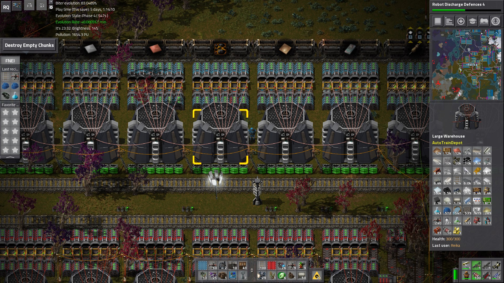

Rapid Loading and Unloading
There are optional (as in can be disabled in mod settings) rapid loader and unloader devices, to improve throughput on late-game depots; these have very high throughput, but also high (multi MW) power draw. In the case of unloading, they also take far more space than inserters.
 Sample depots, with and without BobMods. Both are using the rapid loaders and unloaders instead of basic inserters.
Configuration Settings
This mod contains several config options to modify values and behaviors - such as for balance or server safety concerns, or simply personal taste - to your preferences. Note that several settings may have bounds imposed on their values, either logically or explicitly; these can usually be seen in the actual settings files or ingame. These are listed in order found in the source code, which is generally the order in which they were added; They may be present in a different order ingame or in the configuration files.
Add larger versions of Angel's Warehouses
Type: bool
Current Default Value:
true
Add Rapid Train Loader
Type: bool
Current Default Value:
false
Add Rapid Train Unloader
Type: bool
Current Default Value:
false
Rapid Train Unloader is Inserter
Type: bool
Current Default Value:
false
Whether the rapid train unloader should be implemented as an inserter rather than a loader. Improves performance but reduces flexibility.
Prevent trains from waiting forever
Type: bool
Current Default Value:
true
This will change the pathfinding weights for train routing logic to prevent trains from waiting behind other trains that are likely to never move, or only do so after a significant length of time (eg manual mode, parked at a station, lost without a path, etc).
Source Code
The source code for AutoTrainDepot can be found here:
GitHub